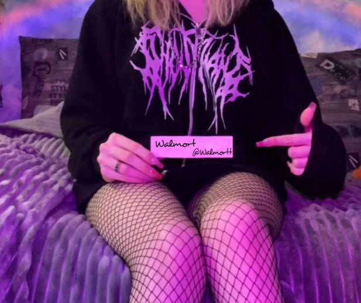

Walmort

ㅤ Rust ❤
перед тем как написать, обязятельно гляньте мой график и профиль <3
📅 График
- Понедельникㅤㅤ05:30 до 00:00
- Вторникㅤㅤㅤㅤ05:30 до 00:00
- Средаㅤㅤㅤㅤㅤ05:30 до 00:00
- Четвергㅤㅤㅤㅤ05:30 до 00:00
- Пятницаㅤㅤㅤㅤ05:30 до 00:00
- Субботаㅤㅤㅤㅤ05:30 до 00:00
- Воскресеньеㅤㅤ05:30 до 00:00